Liste gläubiger Naturwissenschaftller (unvollständig)
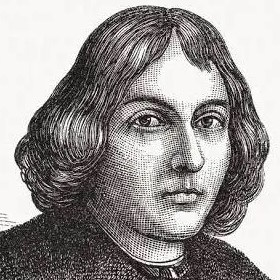
Nikolaus Kopernikus
1473 - 1543
1473 - 1543
Domherr des Fürstbistums Ermland in Preußen sowie Astronom und Arzt, der sich auch der Mathematik und Kartographie widmete
Kopernikus war ein gläubiger Mensch. Er glaubte, dass Gott das Universum entworfen und erschaffen hat. Er war überzeugt, dass Gottes Entwurf mathematischer Natur sei, was sich in der Symmetrie und Ordnung der Himmelsbewegungen widerspiegle. Zu seinen Lebzeiten gab es kaum direkten Konflikt mit der katholischen Kirche. Zwar widersprach er dem geozentrischen Weltbild der damaligen Lehre, aber er wurde nicht verfolgt. Seine Motivation war es, die Bewegung der Himmelskörper genauer und harmonischer zu erklären, nicht, das Christentum anzugreifen. Kopernikus starb, bevor sein Modell die "Kopernikanische Wende" auslöste, die später von Wissenschaftlern wie Galileo Galilei und Johannes Kepler weiterentwickelt wurde.
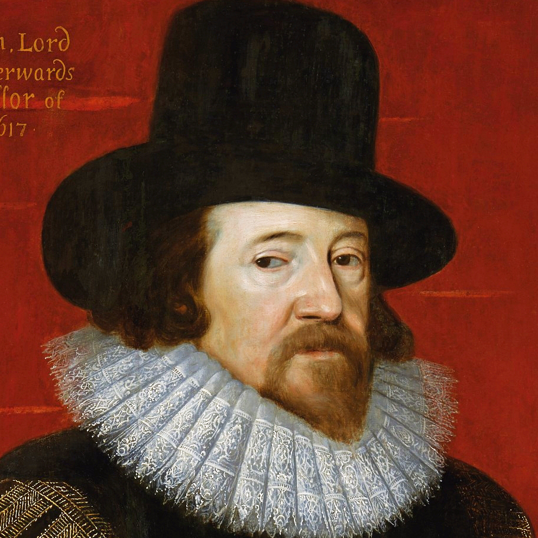
Francis Bacon
1561 - 1626
1561 - 1626
war ein englischer Philosoph, Jurist und Staatsmann, der als Wegbereiter des Empirismus gilt.
Bacon war ein überzeugter, orthodoxer Christ. Er vertrat die Ansicht, dass Gott dem Menschen zwei Bücher zur Verfügung gestellt hat: das Buch der Heiligen Schrift (Offenbarung) und das Buch der Natur (Schöpfung). Er glaubte nicht, dass sich Wissenschaft und Glaube widersprechen, sondern dass die Erforschung der Natur hilft, die Macht Gottes zu verstehen. Bacon unterschied zwischen den Geheimnissen des Glaubens, die über der Vernunft stehen, und der natürlichen Philosophie (Wissenschaft), die sich mit der Schöpfung befasst. Er trennte diese Bereiche, um Konflikte zu vermeiden. Bekannt ist sein Zitat: „Ein wenig Wissenschaft führt von Gott weg, aber viel Wissenschaft führt zu ihm zurück“. Francis Bacon war ein Brückenbauer, der die wissenschaftliche Methode begründete, ohne seinen christlichen Glauben aufzugeben. Für ihn war die Wissenschaft eine Form von „Wohltätigkeit“, um das Leid der Menschheit durch das Verständnis der göttlichen Schöpfung zu lindern
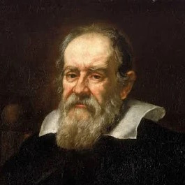
Galileo Galilei
1564 - 1641
1564 - 1641
Physiker, Astrophysiker, Mathematiker, Ingenieur, Astronom, Philosoph und Kosmologe
Galilei war kein Gegner der Religion, sondern ein gläubiger Mensch, der versuchte, Wissenschaft und Glauben zu versöhnen. Er vertrat die Ansicht, dass die Bibel lehrt, „wie man in den Himmel kommt, nicht wie der Himmel geht“. Er sah keinen Widerspruch zwischen der Schöpfung und der Erforschung der Natur. Galilei äußerte, er fühle sich nicht verpflichtet zu glauben, dass derselbe Gott, der uns Sinne, Vernunft und Verstand ausgestattet hat, beabsichtigt habe, dass wir auf deren Gebrauch verzichten. Galilei gilt heute als Pionier, der trotz der Repressionen durch die Kirche die Basis für die moderne Physik und Astronomie schuf. Erst 1992 erkannte die katholische Kirche offiziell an, dass die Verurteilung Galileis ein Fehler war.
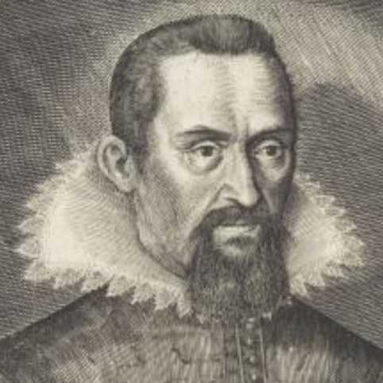
Johannes Kepler
1571 - 1630
1571 - 1630
Astronom, Physiker, Mathematiker, Astrologe und Naturphilosoph
Kepler war praktizierender Lutheraner und suchte die Einheit der Kirche. Kepler war überzeugt, dass Gott das Universum nach einem mathematischen Plan erschaffen hat. Er sah seine Aufgabe darin, diese Geometrie hinter der Schöpfung zu entschlüsseln, und formulierte dies oft als den Versuch, "Gottes Gedanken nachzudenken". Für Kepler war die Natur ein zweites "Buch der Offenbarung" (neben der Bibel), das durch Vernunft und mathematische Forschung verstanden werden kann. Er sah Wissenschaft als Priesterdienst am Buch der Natur. In seiner Harmonices Mundi beschrieb er die Ordnung des Kosmos als eine göttliche Harmonie, was ihn zu Lobpreisungen des Schöpfers in seinen Schriften führte. Kepler sah zeitlebens keinen Konflikt zwischen seinem Glauben und seiner Wissenschaft, sondern betrachtete astronomische Forschung als notwendigen Beitrag zur Verherrlichung Gottes.
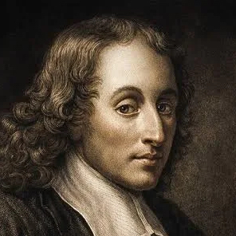
Blaise Pascal
1623 - 1662
1623 - 1662
französischer Mathematiker, Physiker, Literat, Erfinder und christlicher Philosoph
Nach einem intensiven spirituellen Erlebnis wandte sich der zuvor weltliche Pascal verstärkt der Religion zu. Pascal argumentierte, dass der Mensch zerrissen zwischen seiner Größe (Denken) und seinem Elend (Endlichkeit) ist. Gott sei nicht allein durch kalte Vernunft, sondern durch das „Herz“ – eine unmittelbare, intuitive Glaubenserfahrung – erkennbar. Pascal entwickelte ein berühmtes Argument: Es sei rationaler, auf Gott zu wetten. Wenn Gott existiert, gewinnt man alles (ewiges Leben); existiert er nicht, verliert man wenig. Nicht zu glauben, sei das größere Risiko. Pascal diagnostizierte, dass Menschen sich ständig durch Zerstreuung ablenken, um nicht über ihr elendes Dasein und den Tod nachdenken zu müssen. Seine letzten Jahre waren von Krankheit und der Arbeit an den „Pensées“ geprägt, einer unvollendeten Verteidigung des christlichen Glaubens, die erst posthum veröffentlicht wurde. Pascal gilt als ein „Seelenanalytiker“, der existenzielle Fragen des Menschseins auf geniale Weise beantwortete.
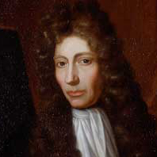
Robert Boyle
1627 - 1691/1692
1627 - 1691/1692
irischer Naturforscher, wurde er zum Mitbegründer der Experimenten beruhenden modernen Naturwissenschaften
Für Boyle war die Erforschung der Natur ein "göttlicher Auftrag". Er sah die Natur als ein "Buch", das die Weisheit des Schöpfers offenbart. Er kämpfte gegen den aufkommenden Atheismus seiner Zeit und war überzeugt, dass Wissenschaft und Religion einander stützen. Boyle entwickelte ein Verständnis, bei dem Gott die Welt als ein komplexes, mechanisches Uhrwerk geschaffen hat, das nach festen Naturgesetzen funktioniert. Er verfasste theologische Schriften (z.B. The Christian Virtuoso) und unterstützte als gläubiger Anglikaner die Übersetzung der Bibel in andere Sprachen. In seinem Testament stiftete er eine Reihe von Vorlesungen, die die Vereinbarkeit des christlichen Glaubens mit der neuen Naturphilosophie verteidigen sollten. Robert Boyle war somit eine komplexe Persönlichkeit, die trotz privater Zweifel am Glauben Pionierarbeit in der Wissenschaft leistete, ohne seine tiefe christliche Überzeugung aufzugeben.
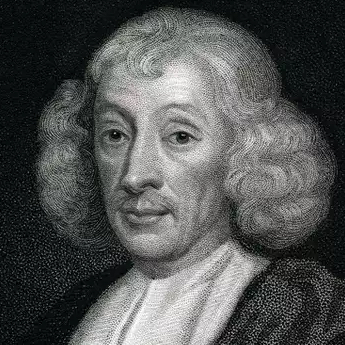
John Ray
1627 - 1705
1627 - 1705
britischer Theologe, Altphilologe und Naturforscher und wird als „Vater der englischen Botanik“ bezeichnet
Rays Glaube war tief in seinem Verständnis der Schöpfung verwurzelt. Er vertrat die Ansicht, dass das Studium der Natur eine Methode ist, um die Weisheit Gottes zu erkennen. In seinem Werk "The Wisdom of God Manifested in the Works of the Creation" von 1691 argumentierte er, dass die Ordnung, Zweckmäßigkeit und Komplexität in der Natur Beweise für einen Schöpfer sind. Ray sah keinen Widerspruch zwischen empirischer Wissenschaft (Beobachtung) und christlichem Glauben. Als anglikanischer Geistlicher (seit 1660) verstand er sich als ein Naturforscher, dessen Arbeit die biblische Schöpfung bestätigte.
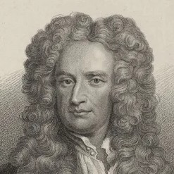
Isaac Newton
1642 - 1726
1642 - 1726
englischer Universalgelehrter, einer der bedeutendsten Naturwissenschaftler
Newton war fest vom Dasein Gottes überzeugt. Er sah die Ordnung des Universums, insbesondere die Bewegung der Himmelskörper, als Beweis für einen intelligenten und allmächtigen Schöpfer. Newton war ein intensiver Bibelforscher. Er analysierte die Prophezeiungen, insbesondere im Buch Daniel und der Offenbarung, und versuchte sogar, das Datum des Weltuntergangs zu berechnen. Für Newton gab es keinen Widerspruch zwischen Wissenschaft und Religion. Im Gegenteil: Seine physikalischen Gesetze sollten die Weisheit Gottes zeigen. Er argumentierte, dass ein so komplexes System wie das Sonnensystem einen weisen Planer und Lenker benötige. Seine berühmte Aussage (sinngemäß), dass er sich fühle, als sei er ein Junge, der am Strand spielt, während der große Ozean der Wahrheit unentdeckt vor ihm liegt, spiegelt seine Demut vor dem Schöpfungswerk wider.

Carl von Linné
1707 - 1778
1707 - 1778
schwedischer Naturforscher, legte die Grundlagen der modernen botanischen und zoologischen Taxonomie
Linnés wissenschaftliche Arbeit war untrennbar mit seiner religiösen Überzeugung verbunden. Linné war tief religiös und Anhänger der sogenannten „natürlichen Theologie“. Er glaubte, dass man durch das Studium der Natur Gottes Weisheit und Schöpfungsordnung verstehen könne. Linné sah seine Aufgabe darin, die Natur so zu ordnen, wie Gott sie geschaffen hat. Sein Motto lautete: „Deus creavit, Linnaeus disposuit“ (Gott schuf, Linné ordnete). Carl von Linné betrieb die Naturwissenschaft als eine Form der Gottesverehrung und versuchte, die Ordnung des Schöpfers in der Vielfalt der Lebewesen aufzudecken.
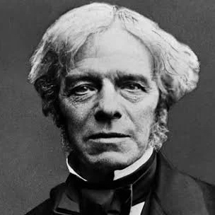
Michael Faraday
1791 - 1867
1791 - 1867
englischer Naturforscher, einer der bedeutendsten Experimentalphysiker, legte den Grundstein der Elektroindustrie.
Faraday war ein gläubiger Christ und nahm seinen Glauben sehr ernst. Er fungierte über 20 Jahre lang als Ältester (Lay Preacher/Co-Pastor) in seiner Londoner Gemeinde, wo er regelmäßig predigte. Er war von der wörtlichen Wahrheit der Bibel überzeugt und vertrat den Grundsatz: „Wo die Schrift spricht, sprechen wir; wo die Schrift schweigt, schweigen wir“. Faraday trennte seine wissenschaftliche Arbeit strikt von seiner religiösen Überzeugung. Er sah in der Natur zwar Gottes Schöpfung, suchte aber nicht in der Bibel nach wissenschaftlichen Erkenntnissen. Für Faraday gab es keinen Widerspruch zwischen seinen Experimenten und seinem Glauben. Er war überzeugt, dass "das Buch von Gottes Welt" und "das Buch von Gottes Wort" (die Bibel) denselben Autor haben und sich daher nicht widersprechen können. Seine Entdeckungen betrachtete er als Entschlüsselung der von Gott festgelegten Gesetze. Überliefert sind seine Worte kurz vor seinem Tod: „Ich werde bei Christus sein, und das genügt“.
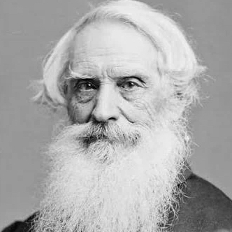
Samuel Morse
1791 - 1872
1791 - 1872
US-amerikanischer Erfinder und Professor für Malerei, Plastik und Zeichenkunst
Aufgewachsen in einem streng calvinistischen Elternhaus, behielt Morse sein Leben lang eine feste, auf der Bibel basierende Glaubensüberzeugung. Er sah seine Arbeit als Erfinder nicht im Widerspruch zu seinem Glauben, sondern als eine Art „Arbeit für Gott“. Er sah sich selbst als „untergeordnete Hand“, die Gottes Werk vollbringt. Er unterstützte zahlreiche religiöse Einrichtungen, Bible Societies und finanzierte Vorlesungen über die Beziehung von Bibel und Wissenschaft. Samuel Morse war ein Mann, der Wissenschaft und Glauben miteinander verband. Während er die moderne Kommunikation revolutionierte, betrachtete er sich selbst als ein Instrument in Gottes Hand. Sein Leben zeigt eine komplexe Mischung aus künstlerischem Genie, technologischer Innovation und einem oft kindlich-tiefen, aber gesellschaftspolitisch konservativen Glauben.
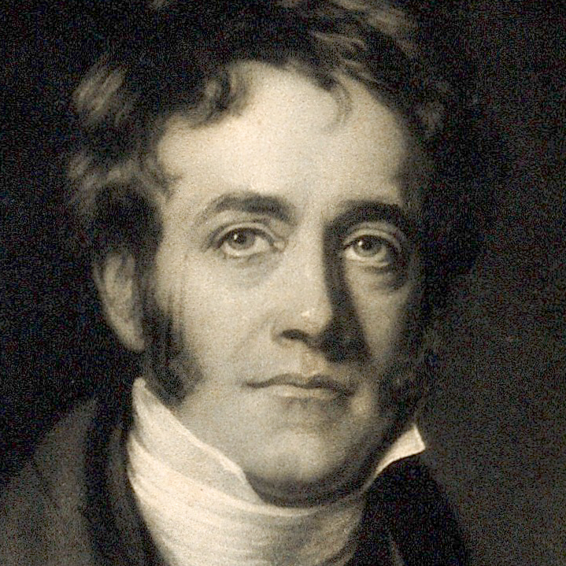
John Herschel
1792 - 1871
1792 - 1871
britischer Astronom, auf ihn gehen die ersten Doppelstern- und Nebelkataloge des Südsternhimmels zurück
Herschel war ein gläubiger Christ, der seine wissenschaftlichen Entdeckungen als Bestätigung göttlicher Schöpfungswahrheiten betrachtete. Er war der Ansicht, dass wissenschaftliche Erkenntnisse die in der Schrift enthaltenen Wahrheiten unterstreichen. Er stand in der Tradition, dass die Untersuchung der Natur dazu dient, „Gottes Gedanken nachzudenken“. Sein Glaube motivierte ihn, sich für die öffentliche Bildung in Südafrika einzusetzen, um Menschen „mit ihrem Schöpfer und Erlöser zu verbinden“. Herschel glaubte an einen Schöpfergott, der die Naturgesetze festlegte, lehnte jedoch Wunder als direkten Eingriff in den Lauf der Natur ab, sondern sah Gott eher als Urheber einer geordneten, gesetzmäßigen Welt.
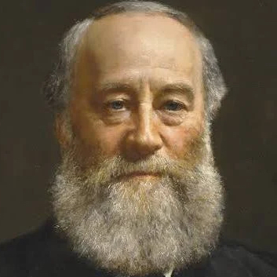
James Joule
1818 - 1889
1818 - 1889
britischer Physiker, forschte zu naturwissenschaftlichen Fragen, gilt als einer der Gründungsväter der Thermodynamik
Joule war ein tiefgläubiger, aufrichtiger Christ. Er sah keinen Widerspruch zwischen seinen wissenschaftlichen Forschungen und der Bibel; vielmehr motivierte ihn sein Glaube zu seiner Arbeit. Er sah seine wissenschaftliche Arbeit als Möglichkeit, Gottes Schöpfung zu verstehen. Er erklärte: „Nach der Kenntnis und dem Gehorsam gegenüber dem Willen Gottes muss das nächste Ziel sein, etwas über seine Eigenschaften der Weisheit, Macht und Güte zu erfahren, wie sie durch seine Handwerkskunst [die Natur] bezeugt werden“. Im Jahr 1864 unterschrieb er ein "Manifest der Natur- und Physiker", das die Übereinstimmung von Wissenschaft und Heiliger Schrift bekräftigte.
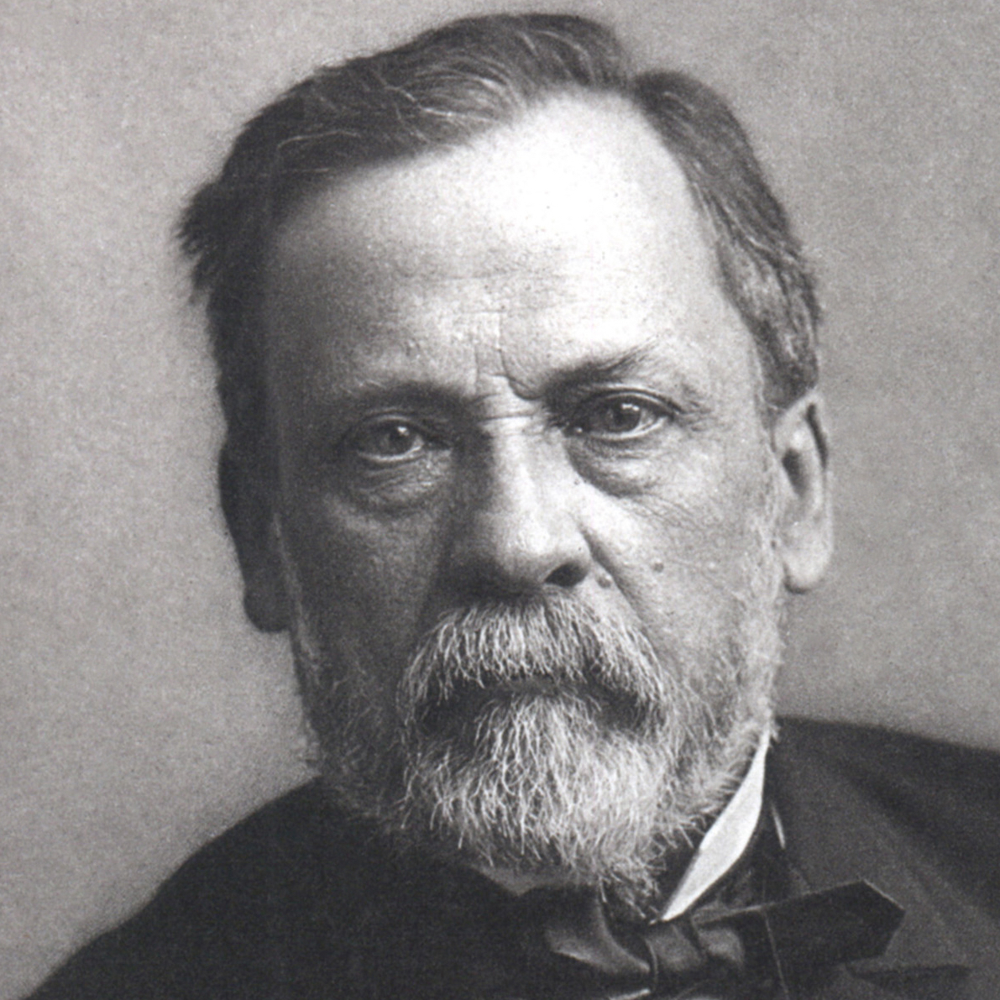
Louis Pasteur
1822 - 1895
1822 - 1895
französischer Chemiker, Physiker, Biochemiker und Mitbegründer der medizinischen Mikrobiologie
Pasteur war Katholik, jedoch kein dogmatischer Anhänger, der die Kirche strikt nach Geboten befolgte. Er beschrieb seinen Glauben als einen "Glauben des Herzens". Pasteur sah keinen Widerspruch zwischen Wissenschaft und Glauben. Er war überzeugt, dass tiefe wissenschaftliche Erkenntnis zur Anerkennung eines Schöpfers führt. Sein Glaube war eng mit dem Wunsch verbunden, der Menschheit zu dienen und Leid zu lindern. Er glaubte fest an Gott als den Schöpfer allen Lebens. Pasteur vertrat die Ansicht, dass der Wissenschaftler und der gläubige Mensch in unterschiedlichen Sphären agieren, die sich nicht in die Quere kommen sollten. Louis Pasteur war ein tiefgläubiger Mann, der seine Forschung als eine Form des Dienstes an Gott und den Menschen verstand, ohne dabei seine wissenschaftliche Objektivität zu vernachlässigen.
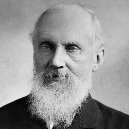
William Thomson Kelvin
1824 - 1907
1824 - 1907
britischer Physiker auf den Gebieten der Elektrizitätslehre und der Thermodynamik
Kelvin war ein überzeugter Christ und sah keinen Widerspruch zwischen Naturwissenschaft und Religion. Für ihn war die Wissenschaft ein Mittel, um die Werke Gottes zu verstehen. Er war bekannt für seine Aussage, dass tiefgründige Wissenschaft zum Glauben an Gott führt. Er sagte: „Je gründlicher ich wissenschaftliche Forschung betreibe, desto mehr glaube ich, dass die Wissenschaft den Atheismus ausschließt“. Er war überzeugt, dass die Ordnung in der Natur auf einen Schöpfer hinweist. Kelvin war ein Mann, der sowohl in der wissenschaftlichen Exzellenz (Quantifizierung, Messung) als auch im Glauben nach absoluter Wahrheit strebte.
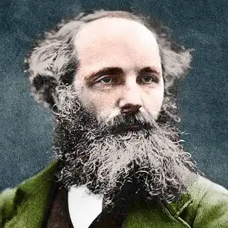
James Clerk Maxwell
1831 - 1879
1831 - 1879
schottischer Physiker, seine Feldtheorie gilt als eine der wichtigsten Leistungen der Physik und Mathematik des 19. Jahrhunderts.
Maxwell sah keinen Widerspruch zwischen Wissenschaft und Glauben. Er war überzeugt, dass der Gott, der sich in der Bibel offenbart, derselbe ist, der die Naturgesetze geschaffen hat. Für Maxwell war die wissenschaftliche Erforschung der Natur ein Verständnis des Schöpfungsaktes Gottes. Während seiner Zeit in Cambridge vertiefte sich sein christlicher Glaube, der sein ganzes Leben und Arbeiten prägte. Er war Mitglied der Presbyterianischen Kirche. Maxwell gilt als ein klassisches Beispiel dafür, dass eine "raue Schale" (ein sehr intellektueller, kritischer Verstand) und ein zutiefst "reverenter" (ehrfürchtiger) Glaube an Gott Hand in Hand gehen können.
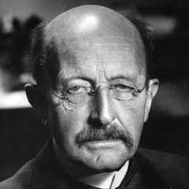
Max Planck
1858 - 1947
1858 - 1947
deutscher Physiker auf dem Gebiet der theoretischen Physik, gilt als Begründer der Quantenphysik
Planck sah keinen Widerspruch zwischen Naturwissenschaft und Religion, sondern betrachtete sie als Ergänzung: „Die Naturwissenschaft braucht der Mensch zum Erkennen, die Religion aber braucht er zum Handeln“. Planck bezeichnete sich selbst als zutiefst religiös, war jedoch kein Anhänger eines persönlichen, christlichen Gottes, sondern eher eines Weltbildes, in dem ein „göttlicher Geist“ hinter den Naturgesetzen steht. Er sah das Ziel von Wissenschaft und Religion in einem gemeinsamen Kampf gegen Skeptizismus und Aberglauben, der „Hin zu Gott“ führt. Max Planck war ein Wissenschaftler, der in der Naturordnung eine höhere Ordnung sah und für den Forschen eine ehrfürchtige Annäherung an ein göttliches Geheimnis darstellte.
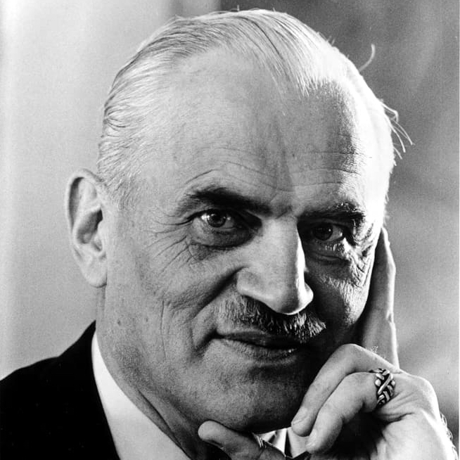
Arthur Holly Compton
1892 - 1962
1892 - 1962
US-amerikanischer Physiker und Nobelpreisträger
Compton war ein aktiver Presbyterianer unentdeckt vertrat einen liberalen bis "modernistischen" christlichen Glauben, der Evolution und Wissenschaft harmonisch mit dem Glauben an Gott verband. Er sah in der Evolution ein von Gott gelenktes Mittel zur Entstehung bewusster, freier Wesen. Er sah keinen Widerspruch zwischen Wissenschaft und Glauben. Für ihn war ein intelligenter Geist ein Selbstzweck. Er war zerrissen zwischen seiner Leidenschaft für die Physik und dem Wunsch, Missionar zu werden. Sein Vater überzeugte ihn jedoch, dass er als Wissenschaftler einen größeren Dienst für das Christentum leisten könne.
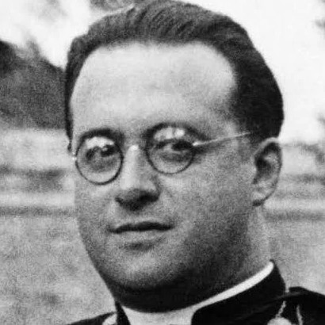
Georges Lemaître
1894 - 1966
1894 - 1966
belgischer Theologe, katholischer Priester und Astrophysiker. Er gilt als Begründer der Urknalltheorie.
Lemaître trennte strikt zwischen wissenschaftlicher Forschung und metaphysischem/religiösem Glauben. Er war der Ansicht, dass die Wissenschaft die Autonomie der physikalischen Gesetze erforscht. Er argumentierte, der christliche Forscher wisse zwar, dass nichts ohne Gott geschehe, aber er wisse auch, dass Gott nicht den Platz der Geschöpfe einnehme. Die „göttliche Wirksamkeit“ sei im Wesentlichen verborgen. Für Lemaître waren Glaube und Wissenschaft nicht unvereinbar. Er sah die Schöpfung nicht als ein einmaliges Ereignis in der Vergangenheit, sondern als einen andauernden Prozess. Lemaître gilt heute als Paradebeispiel für einen Wissenschaftler, der sowohl in der theoretischen Physik als auch im Glauben eine tiefgründige Wahrheit sah, ohne beide Bereiche unzulässig zu vermischen.
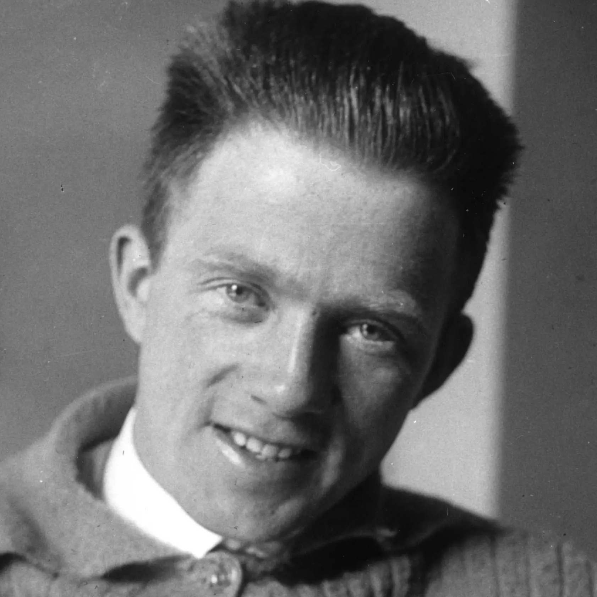
Werner Heisenberg
1901 - 1976
1901 - 1976
deutscher Physiker, Begründer der Quantenmechanik, einer der bedeutendsten Physiker des 20. Jahrhunderts
Heisenberg war ein gläubiger Mensch, der jedoch einen eher rationalen, harmonieorientierten Glauben vertrat. Heisenberg wird oft mit folgendem Satz über das Verhältnis von Wissenschaft und Religion zitiert: „Der erste Schluck aus dem Becher der Naturwissenschaft macht atheistisch, aber auf dem Grunde des Bechers wartet Gott!“. Für ihn war die Naturwissenschaft nicht der Feind des Glaubens, sondern ein Weg, die göttliche Ordnung in der Struktur der Materie zu erkennen. Er sah mathematische Symmetrien als Ausdruck einer tieferen Wirklichkeit. Heisenberg war ein Denker, der die Grenzen des Messbaren aufzeigte und dabei zu der Überzeugung gelangte, dass an den Fundamenten der Naturwissenschaft eine tiefe, ordnende Kraft – Gott – zu finden ist.
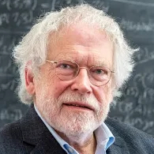
Anton Zeilinger
1945 -
1945 -
österreichischer Quantenphysiker und Hochschullehrer an der Universität Wien
Zeilinger bezeichnet sich als gläubig und ist römisch-katholisch erzogen. Sein Glaube ist jedoch kein dogmatischer, sondern ein hinterfragender, der eng mit dem Staunen über die Natur verbunden ist. Zeilinger betont, dass Naturwissenschaft und Religion verschiedene Aspekte der Wirklichkeit beschreiben und sich nicht widersprechen, solange sie ihre Zuständigkeitsgrenzen anerkennen. Er äußert sich skeptisch gegenüber dem Versuch, Gott logisch zu beweisen, und sagt, dass Gott nicht beweisbar sein darf. Dennoch sieht er in der Quantenphysik (wie der Frage nach dem Ursprung der Naturgesetze oder der Rolle des Zufalls) Fragen, die Raum für eine metaphysische Dimension lassen. Für ihn ist die Quantenphysik, in der der Zufall eine grundlegende Rolle spielt, "göttlich" oder ein Raum, in dem man über eine höhere Ordnung nachdenken kann. Er bezweifelt, dass ein rein materialistisches Weltbild ausreicht, um die Welt vollständig zu verstehen, und sieht Raum für geistige Dimensionen.
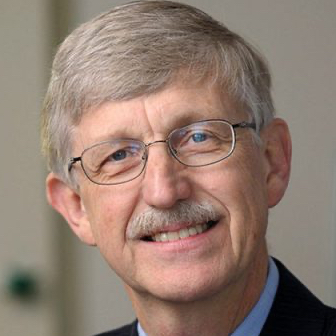
Francis Collins
1950 -
1950 -
US-amerikanischer Genetiker und ehemaliger Direktor der National Institutes of Health
Francis S. Collins leitete das Human Genome Project, dem 2000 die Entschlüsselung des menschlichen Erbgutes gelang – und ist bekennender Christ. In seinem Buch geht er auf das Dilemma ein, in dem sich jeder befindet, der an Gott glaubt und die naturwissenschaftliche Weltsicht nicht ablehnt: Muss, wer der vernunftgeleiteten Wissenschaft vertraut, den Gottesglauben verwerfen? Francis S. Collins zeigt, wie die strenge Logik der Wissenschaft und der weite Raum des Glaubens zusammenpassen.
A Scientist Presents Evidence of Belief (Englisch)
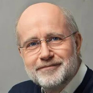
Harald Lesch
1960 -
1960 -
deutscher Astrophysiker, Naturphilosoph, Wissenschaftsjournalist, Fernsehmoderator und Hörbuchsprecher.
Lesch hält es für einen Irrtum, dass Glaube und Wissenschaft Gegensätze sind. Die Naturwissenschaften untersuchen das "Wie" der Welt, während der Glaube Antworten auf das "Warum" und die Wertefrage liefert. Er glaubt an einen persönlichen Gott und sieht in Jesus die Zusage „Fürchte dich nicht“ als Kernbotschaft. In schwierigen persönlichen Lebenssituationen hat er Gottes Nähe erfahren. Als Naturwissenschaftler, der sich mit der Entstehung des Lebens (z.B. LUCA) befasst, sieht er die Pflicht, die Schöpfung zu bewahren. Lesch vertritt die Ansicht, dass ein freier, von Gott gewollter Mensch in einer Welt lebt, die verlässlichen Gesetzen folgt, und dass Wissenschaft und Religion einander bereichern.
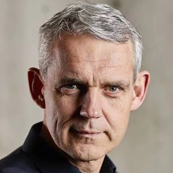
Heino Falcke
1966 -
1966 -
deutscher Radioastronom. Er ist Professor an der Radboud-Universität Nijmegen.
Für Falcke ist der Glaube kein Widerspruch zur Wissenschaft. Er sieht Naturgesetze als "Worte Gottes". Er glaubt an einen Schöpfergott, der hinter dem Urknall steht. Das Studium der Physik hat ihm die Schönheit der Schöpfung und die Größe des Schöpfers verdeutlicht. Er betont, dass die Wissenschaft nicht die ganze Welt erklären kann und oft an Grenzen stößt (z.B. bei der Frage nach dem Warum vor dem Urknall). Neben seiner wissenschaftlichen Karriere ist Falcke Prädikant in der evangelischen Kirche. Falcke hat nach eigenen Worten keine Angst vor dem Tod, sondern ist "freudig gespannt" auf das, was kommt, und fest überzeugt, Gott irgendwann zu sehen. Heino Falcke ist ein Wissenschaftler, der die moderne Astrophysik nutzt, um über die Grenzen des Messbaren hinaus zu blicken und dabei eine tiefe persönliche Beziehung zum christlichen Glauben pflegt.